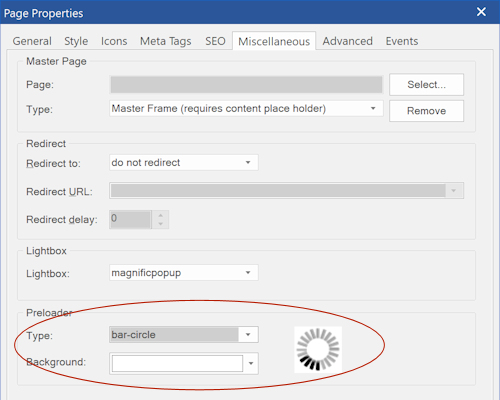

Page Preloader
A preloader (also known as loading screen) is what you see on some sites before the main content of the web page is loaded.
WYSIWYG Web Builder can display a (semi transparent) overlay with animated gif when the website loading is in progress.
It will disappear right after the page loads.
A preloader (also known as loading screen) is what you see on some sites before the main content of the web page is loaded.
WYSIWYG Web Builder can display a (semi transparent) overlay with animated gif when the website loading is in progress.
It will disappear right after the page loads.
A collection of standard preloader images is included, but you can also add your own animations by adding a custom gif image to the 'preloader' sub folder. This folder is normally located in Documents\WYSIWYG Web Builder\system\preloader\


You can configure a preloader image in the Page Properties -> Miscellaneous

Note:
If the loader does not disappear then there is most likely a script conflict on the page. When this happens then please remove all custom Java Script and try again.
If the loader does not disappear then there is most likely a script conflict on the page. When this happens then please remove all custom Java Script and try again.